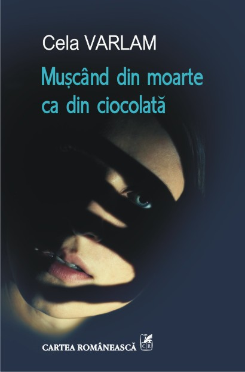
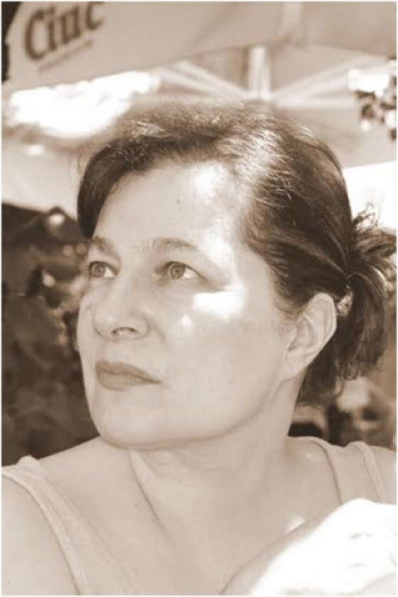

 Cu o experiență consolidată prin realizarea de scenarii radiofonice, prin rolul de secretar literar al Teatrului Bulandra sau cel de traducător și interpret, cu ajutorul articolelor de jurnalism cultural, scriitoarea Cela Varlam obține Premiul pentru debut în proză al Uniunii Scriitorilor din România în 1998 pentru romanul Trec rânduri, rânduri muritorii. I-au urmat, în 2001, volumul de povestiri Lumea dintre lumi, în 2005, romanul Să nu-mi luați temnița, care s-a bucurat de o primire sonoră atât în presa de specialitate, cât și în rândul cititorilor, iar în 2010, romanul Sânge-albastru, sânge roșu. Cela Varlam este membra a Uniunii Scriitorilor din Romania din anul 2008.
După cinci ani de la ultimul său roman, Cela Varlam transcede granițele teritoriului românesc spre alte rădăcini ale românilor pierdute peste granițe, în locuri unde etnia nu reprezenta o problemă, cel puțin pentru comunitatea respectivă. Totuși, populația multietnică a constituit motivul principal pentru care, de-a lungul vremii, conducătorii de stat și-au îndreptat privirile spre acea zonă. Scriitoarea face o incursiune de o umanitate sfâșietoarea în inima unei fetițe de 13 ani din zona Istriei, care după finalizarea celui de al doilea război mondial, se trezește și ea parte a curățeniei generale purtată și transferată de la o minte bolnavă la alta, ca pe un virus contra căruia nu există leac nici acum, în secolul XXI. Ena și familia ei sunt ridicați într-o noapte împreună cu locuitorii localității Șușnevița de către partizanii lui Tito și duși spre Pazin unde aveau să-și găsească moartea în văile fără sfârșit ale munților. Totuși, liderul partizanilor, Filip, o figură controversată și aflată la granița dintre salvator măreț al victimelor războiului și susținător fervent al idealurilor lui Tito, vrăjit de frumusețea Enei o salvează pe aceasta, precum și pe fratele ei, Gabriel, de patru ani, oferindu-le un cămin în tabăra de refugiați Padriciano, de la Trieste. Acesta este momentul declanșator al unei povești de dragoste halucinante, între victimă și călău, așa cum de multe ori îl numește Ena pe Filip, între două tabere opuse ce în veci n-aveau a-și găsi liniștea sau a accepta lumea din care celălalt făcea parte.
Firului epic principal, și anume dragostea nefirească dintre Ena și Filip, dragoste dezvoltată și apoi ucisă într-un context istoric despre care poate prea puține cunoaștem, se adaugă altele, care parcă întregesc situația aberantă în care s-au aflat mii de oameni după ce, printr-un miracol, au scăpat de nebunia lagărelor de exterminare. Dacă viața și-a continuat nonșalant cursul după finalizarea războiului, victimele celui de-al doilea război mondial au trecut la o nouă etapă – cea în care se aflau într-o nouă luptă de supraviețuire, de data aceasta într-o confruntare asiduă cu amintiri, cu lipsa familiei sau a locului de care aparțineau. Sau, de ce nu, cu lipsa unei identități! Făceau parte din acea categorie numită displaced persons (informație prea des amintită în carte!), și erau stigmatizați pe viață cu pecetea războiului. Așadar, avem de-a face cu o poveste care vorbește despre îndepărtata Istria, unde istro-românii actuali și-au redus considerabil numărul, dar fără ca autoarea să piardă din vedere teritoriul românesc, realizând o frescă – o viziune de ansamblu a perioadei de după al doilea război mondial, când comunismul pune stâpânire pe o mare parte a teritoriului european, autoarea legând sforile nevăzute dintre un sătuc de poveste aflat în munții austeri ai actualei Croația, Șușnevița, cu o altă locație, Pazin, unde suflul Enei se pierde împreună cu cel al familiei moarte, continuând cu tabăra Padriciano din Trieste, apoi cu Bucureștiul comunist în care prietena Enei, evreica Tamar, își folosește toată puterea și inteligența în favoarea partidului comunist și continuând cu alte tabere de refugiați din Bergen-Belsen sau Fohrenwald, prin care trece tânărul botoșănean Costi, nevoit să joace rolul de evreu pentru a fugi de un trecut mult prea dureros pentru a mai fi trăit și, de ce nu, finalizând oarecum povestea într-o Elveție neutră, în Châtonnaye. Oameni împrăștiați în întreaga lume care plâng tot restul vieții după locurile natale și după identitatea furată sau, și mai grav, după statutul de individ, parte a societății, statut ce nu le mai aparține.
 Obișnuită cu cărțile ce vorbeau despre atrocitățile din rândurile neamului evreiesc, despre realitatea factuală și crudă din timpul Holocaustului, cartea de față a fost o surpriză din două motive: perioada analizată, post genocid, și perspectiva din care sunt privite consecințele războiului, război ce nu se mai sfârșește căci la marile lor întâlniri, coloșii politicii mondiale știau bine că, așa cum un copil se naște doar dintr-un bărbat și o femeie, orice tratat de pace e semnătura pentru următorul mare conflict. Particularitatea operei de față este dată de analiza condiției de refugiat, care nu este decât un cobai gri, murdar și urât, care părăsise condiția de om. În spatele porților greoaie ale lagărului de la Padriciano, se oprea zvâcnirea comunitară a mai multor neamuri, a unei populații, a speranțelor celor de afară, ba chiar, de ce nu, a continentului nostru uzat și bolnav, răpus, în fond, de războaie. Nu-i vorbă că nu știam bine despre ce țară vorbim, căci locul acela se plimba între identitățile locuitorilor ca o găină rătăcită în pădure.
Remarcabile sunt incursiunile realizate în mintea unor personaje pentru care viața este o povară, în care salvarea nu a reprezentat decât o moarte lentă, dulce-amăruie, precum ciocolata, în care sufletul nobil al unei fetițe de 13 ani a fost transformat într-un cuib în care sentimente precum durerea, iubirea, remușcarea și-au creat culcușul pentru ca la momentul potrivit să explodeze într-un gest necugetat, dar aducător de pace. Cartea are darul de a reține cititorul și datorită stilului epistolar și fragmentar, fără ordine cronologică, în care sunt transpuse fragmente din viața Enei, dar și ușurinței cu care autoarea a intercalat un trecut de mult apus cu un prezent ce abia acum își încheie socotelile, prin reîntâlnirea cu trecutul, și deci prin încheierea unei păci cu o durere născută la început de tinerețe și apusă doar prin închiderea definitivă a ochilor.
Mușcând din moarte ca din ciocolată uimește prin lipsa de libertate de care beneficiază fiecare personaj, unul mai complex decât celălalt, toți reduși la acest numitor comun: adulmecarea libertății, conștiința existenței ei și totuși lipsa dureroasă a acesteia. Actuală este frenezia iubirii dintre două persoane aflate în tabere opuse, dar mai ales prin expunerea atât de reală și de intensă a privațiunii de libertate pe care o oferă adeseori iubirea, indiferent de contextul istoric în care aceasta se manifestă. O carte despre libertate, pace și iubire, mereu aflate la mare distanță de umanitate!
August 19, 2015
© 2015 Filme Cărți